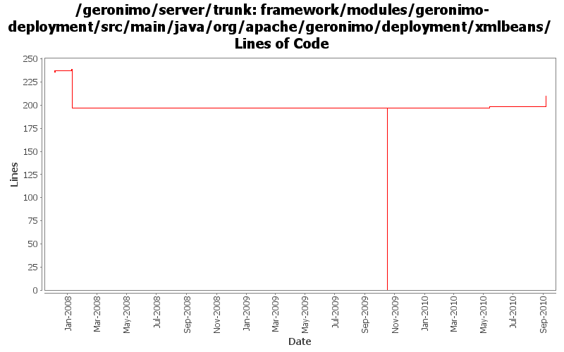

[root]/framework/modules/geronimo-deployment/src/main/java/org/apache/geronimo/deployment/xmlbeans

| Author | Changes | Lines of Code | Lines per Change |
|---|---|---|---|
| Totals | 11 (100.0%) | 233 (100.0%) | 21.1 |
| djencks | 4 (36.4%) | 209 (89.7%) | 52.2 |
| xuhaihong | 2 (18.2%) | 16 (6.9%) | 8.0 |
| dblevins | 4 (36.4%) | 7 (3.0%) | 1.7 |
| gawor | 1 (9.1%) | 1 (0.4%) | 1.0 |
add null check
1 lines of code changed in 1 file:
GERONIMO-5511 context-priority-classloader is not allowed in geronimo-web.xml for backwards compatibility (Based on the patch from viola)
15 lines of code changed in 1 file:
GERONIMO-5299 force XMLBeans to ignore validating contexts of lax type
1 lines of code changed in 1 file:
GERONIMO-4916 step 2 move sandbox osgi framework into trunk
197 lines of code changed in 1 file:
GERONIMO-4916 step 1 remove old framwork
0 lines of code changed in 1 file:
GERONIMO-3742 Split up namespace upgrades into the modules that need them
6 lines of code changed in 1 file:
GERONIMO-3738 Expose new compactPath (or, expose security vulns) jetty parameter
6 lines of code changed in 1 file:
Re-enabled the bump in the openejb v2 schema version
4 lines of code changed in 1 file:
rolling back the change. can't seem to get it to build.
3 lines of code changed in 1 file:
Bumped openejb-jar v2 schema version as new 'jndi' element was added
0 lines of code changed in 2 files: